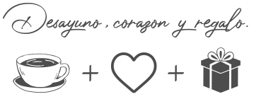

verónica
Branding & Diseño de Packaging
FICHA TÉCNICA +
Cliente: Verónica Desayunos
Año: 2016
Lugar: Mar del Plata, Argentina
Trabajo: Desarrollo de branding, piezas gráficas publicitarias y diseño de packaging.
Herramientas: Adobe Photoshop y Adobe Illustrator.
SOBRE VERÓNICA +
Verónica es una empresa familiar dedicada al envío de desayunos a domicilio y servicios de catering para eventos. Además, Verónica cuenta con una amplia tienda de regalos ubicada en el centro comercial Güemes de Mar del Plata (Argentina).
DERECHOS DE USO +
Diseño realizado para Verónica Desayunos, Mar del Plata, Argentina. Diseñado por María Paz Pagnossin. Todos los derechos de uso reservados.
CONCEPTO
Para definir el concepto de Verónica, se buscaron tres palabras clave e imágenes mentales que intervienen en el desarrollo de su marca:
PALETA DE COLOR
El rojo, representa a la pasión y el amor. Es el primer color que imaginamos al pensar en un corazón y en un regalo. Verónica, son desayunos que se regalan desde el corazón a esa persona especial en nuestras vidas.
PACKAGING
MERCHANDISING